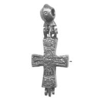
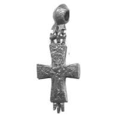

Catalog › CE-0501 · PES2020-F1-1
Encolpion bivalv, Veliki Novgorod, рис. 1, 1
mijlocul sec. XI (1034–1066) · Veliki Novgorod, săpătura Desiatinîi 3 (Дес-3/1-92), Rusia
double-sided reliquary cross (enkolpion); mijlocul c. XI (1034–1066); found at Veliki Novgorod, săpătura Desiatinîi 3 (Дес-3/1-92), Rusia.




Identificare
- Categorie
- Encolpion bivalv (relicvar)
- Tehnică
- Gravare (incizie); Niello
- Stare
- Întreagă
Iconografie
- Avers
- Răstignirea (Hristos cu perizoma)
- Descriere avers
- Răstignirea: Hristos încins, cu un crucifix cu patru brațe deasupra capului (descrierea grupului IV.6.1 / IV.5.5, după autor).
- Revers
- Maica Domnului Orantă
- Descriere revers
- Maica Domnului în rugăciune (orantă) (descrierea grupului, după autor).
Datare și atribuire
- Datare
- mijlocul sec. XI (1034–1066)
- Tipologie
- Korzuhina–Peskova 2003, grupa IV.6.1 (standard)
Descoperire
- Localitate
- Veliki Novgorod, săpătura Desiatinîi 3 (Дес-3/1-92)
- Țară
- Rusia
- Context
- Așezare
- Anul
- 2008
- Coordonate
- 58.5610° N, 31.2809° E
- Precizia locului
- Doar localitatea
Păstrare și referințe
- Bibliografie
- А. А. Пескова, Древнейшие древнерусские нагрудные кресты-реликварии в свете новых исследований, în „Археологические вести”, 27, 2020, p. 175–193 [Пескова 2020], рис. 1, 1 (p. 178, legenda p. 179), tabelul 1 (p. 181). DOI 10.31600/1817-6976-2020-27-175-193. Publicată la: Олейников 2019, p. 163, рис. 1.
- Figura
- рис. 1, 1
- Planșe
- Пескова 2020, p. 178
- Observații
- Găsit în stratul de la mijlocul sec. XI (datare după contextul arheologic); Tabelul 1, nr. 5. Dimensiunile medii ale grupei IV.6.1: 3,5 × 2,5 cm. Datare: după contextul arheologic dat de autor. Coordonate: ale localității (aproximative), nu date în sursă.
Citare: Corpus Encolpiorum, CE-0501, Encolpion bivalv, Veliki Novgorod, рис. 1, 1, https://vitaliejosanu1979-ux.github.io/primul-meu-proiect/piese/PES2020-F1-1/ (accesat 2026-10-17).